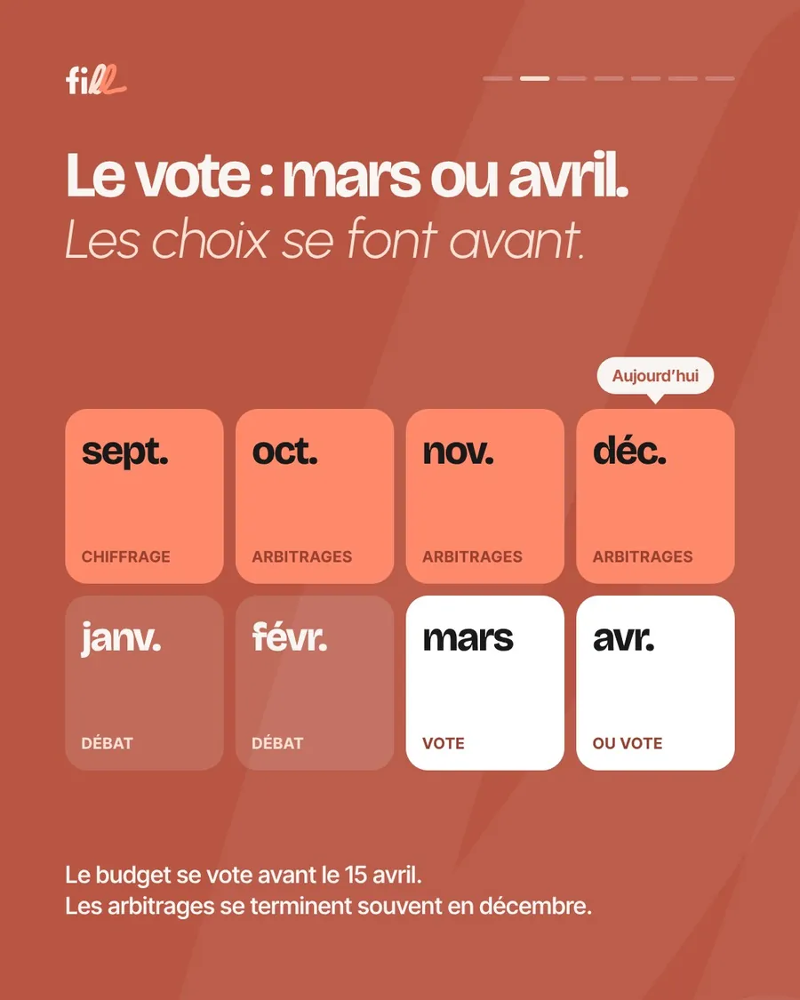
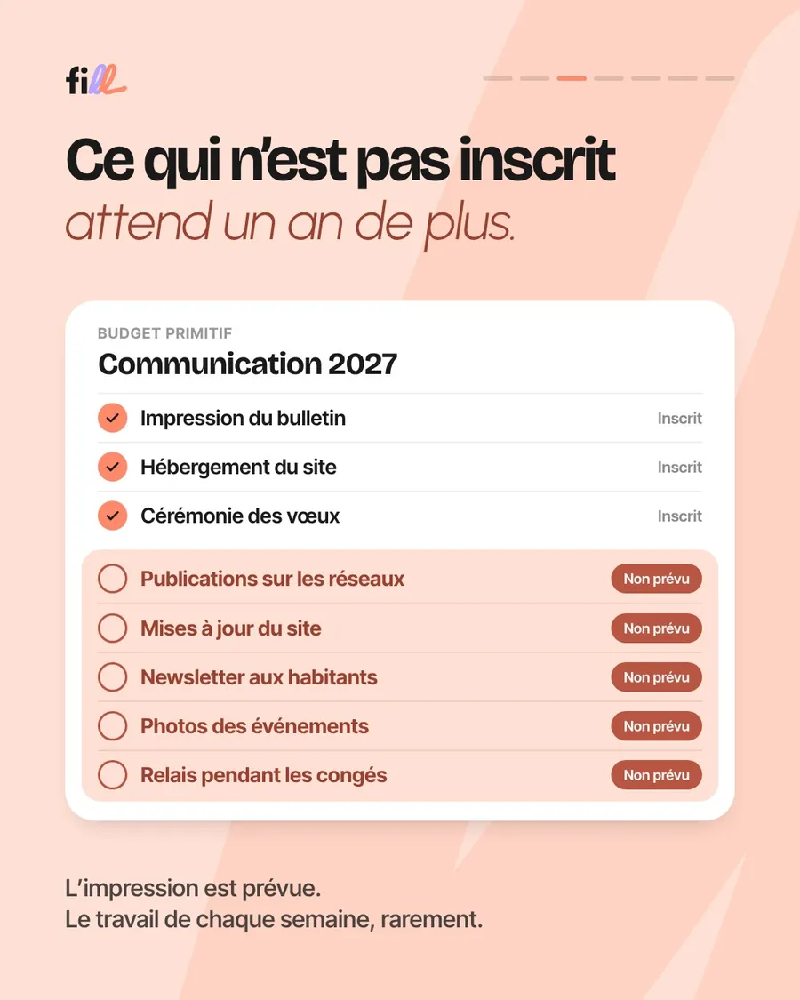
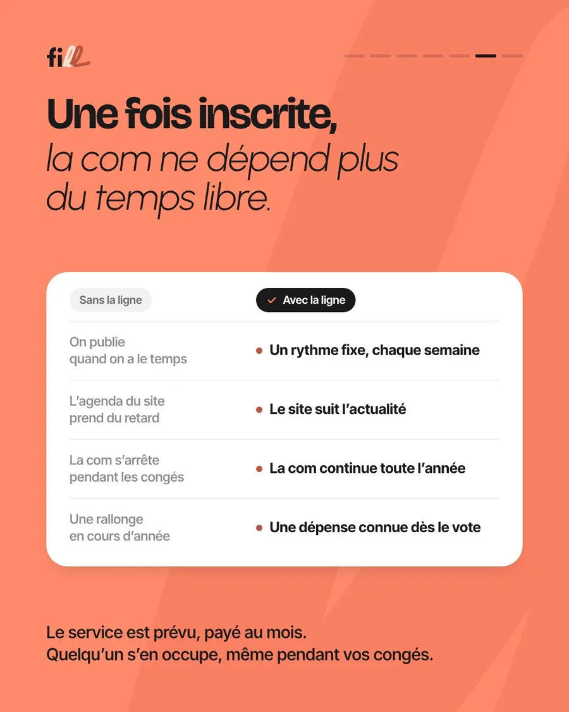

Dans une commune, le budget primitif 2027 se vote au plus tard le 15 avril. Pourtant, l’essentiel se joue avant la fin de l’année, entre les demandes des services et les arbitrages des élus. Ce qui n’est pas chiffré à ce moment-là attend une décision modificative, ou l’année suivante. La communication n’échappe pas à la règle, et c’est souvent sa partie la plus utile qui reste hors du budget.
Un vote au printemps, des choix à l’automne
Le calendrier budgétaire d’une commune est fixé par la loi. Le budget primitif doit être voté avant le 15 avril de l’année à laquelle il s’applique (le 30 avril les années de renouvellement des conseils municipaux). Dans les communes de 3 500 habitants et plus, ce vote est précédé d’un débat d’orientation budgétaire, qui se tient dans les deux mois avant l’examen du budget (dix semaines pour les collectivités passées à la nomenclature M57).
Mais le vote n’est que la dernière étape. Le travail commence bien avant :
| Période | Ce qui se passe |
|---|---|
| Septembre | Les services chiffrent leurs besoins pour l’année suivante |
| Octobre à décembre | Les élus arbitrent entre les demandes |
| Janvier et février | Débat d’orientation budgétaire (3 500 habitants et plus) |
| Mars ou avril | Vote du budget primitif |
À la fin de l’année, la plupart des enveloppes sont donc déjà dessinées. Une dépense qui n’a pas été demandée à temps n’est pas impossible, mais elle devient plus difficile : elle passe par une décision modificative en cours d’année, ou attend l’exercice suivant.

Ce qui est inscrit, et ce qui ne l’est pas
Quand on regarde la ligne « communication » d’un budget communal, on y trouve presque toujours les mêmes dépenses : l’impression du bulletin municipal, l’hébergement du site internet, la cérémonie des vœux. Ce sont des dépenses visibles, avec un devis et une facture, faciles à reconduire d’une année sur l’autre.
Ce qui manque, c’est le travail de chaque semaine :
- les publications sur les réseaux sociaux ;
- la mise à jour du site (actualités, agenda, horaires, démarches) ;
- la lettre d’information aux habitants ;
- les photos des événements ;
- le relais pendant les congés ou une absence.
Ce travail existe pourtant. Il est simplement pris sur le temps d’un agent dont ce n’est pas le métier principal, souvent au secrétariat de mairie ou à l’accueil. Comme il ne coûte rien sur le papier, il n’apparaît dans aucune ligne. Et quand la personne s’absente, il s’arrête.

Côté entreprises, le même calendrier
Les entreprises suivent une logique proche. Le prévisionnel de l’année suivante se construit en fin d’année, avec les mêmes réflexes : le salon professionnel, la refonte du site ou la publicité locale y figurent, parce qu’ils ont un prix. La communication de chaque mois (publications, actualités, lettre aux clients) est rarement chiffrée, et finit par dépendre du temps qu’il reste entre deux commandes.
Chiffrer une ligne réaliste
Pour inscrire la communication courante au budget, il faut partir du volume, pas d’un montant rond. Trois questions suffisent :
- Que faut-il publier chaque mois ? Compter les publications, les actualités du site, les événements à l’agenda, les lettres d’information. Une commune de 2 000 à 8 000 habitants tourne souvent autour d’une vingtaine de contenus par mois.
- Qu’est-ce qui revient chaque année ? Les vœux, le bulletin, la rentrée, les fêtes de fin d’année, les grands événements. Ce sont les pics à prévoir.
- Qui s’en occupe quand la personne habituelle est absente ? Les congés d’été et de fin d’année représentent à eux seuls cinq à six semaines par an.
Avec ce volume, il devient possible de comparer les solutions : temps d’agent dédié, prestataire au forfait, renfort ponctuel. Pour une prestation externe, mieux vaut raisonner en coût mensuel puis annuel : c’est ainsi que la ligne sera lue en commission des finances.
À titre d’exemple, les formules de Fill représentent sur douze mois 5 880 € (Essentiel, 15 unités par mois), 11 880 € (Régulier, 35 unités) ou 22 680 € (Soutenu, 75 unités), prix fixes, TVA non applicable. Quel que soit le prestataire, le montant dépend d’abord du volume, ensuite des délais attendus.
Ce que change une ligne inscrite
Une fois la dépense prévue, la communication ne dépend plus du temps libre de quelqu’un. Elle suit un rythme fixe, le site suit l’actualité de la commune ou de l’entreprise, et le travail continue pendant les congés. La dépense est connue dès le vote, au lieu d’arriver en cours d’année sous la forme d’une rallonge.

En résumé
- Le budget primitif se vote avant le 15 avril, mais les arbitrages se font avant la fin de l’année.
- L’impression du bulletin et l’hébergement du site sont souvent prévus ; le travail de chaque semaine l’est rarement.
- Pour chiffrer, partir du volume mensuel, des temps forts de l’année et des périodes d’absence.
- Raisonner en coût mensuel puis annuel, et vérifier la procédure d’achat applicable.